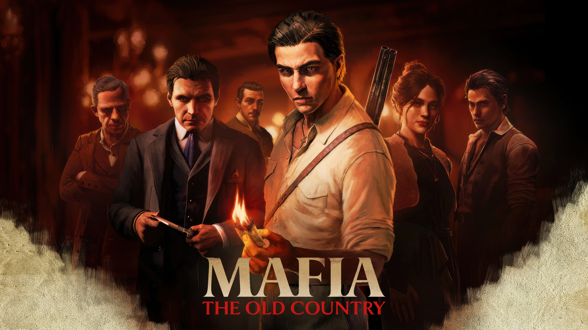
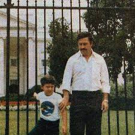

A Mafia wakes up, when a city sleeps
The city sleeps, but tonight, fear walks the streets. Somebody disappears every night, leaving the streets full of fear.
Nobody knows who is behind these crimes. The city whispers about an unknown mafia, a group more dangerous than anyone has
seen before. The first victims are random. People keep missing in the streets. The Doctor works hard every night.
Whenever someone is attacked, the Doctor saves them just in time. People start trusting the Doctor more than anyone else.
Meanwhile, the Sheriff begins an investigation. He is smart and influential. He asks, “Is there anybody suspicious in
this city?” He watches the streets carefully, looking for clues. But there is somebody who always distracts him, sending him
in the wrong direction. Sometimes, she even protects the mafia without anyone knowing.
The mafia’s leader, the Don, is rich, powerful, and clever. He hides his identity well. He wants to kill the Sheriff
to control the city and announces a billion dollars for the Sheriff's head. Every night, the Don sends somebody to attack
the Sheriff. But the Sheriff is careful. He knows somewhere, the Don is hiding, and he is determined to catch him.
The city becomes a game of cat and mouse. Every move counts. The Sheriff feels the weight of the city on his shoulders,
knowing that somewhere, the Don waits, watching, planning.
Finally in a thunderstorm, the Sheriff finds somewhere the Don is hiding. He plans carefully to attack. He tells his team
to get ready.
The mafia also knew about the attack. The Don calls his all men from all around the city. And he says - "now we are ready
to meet our guests"...
The real facts:
"Pablo Escobar was one of the richest and most powerful criminals in history. In the 1980s, he had about 25–30 billion dollars. His cartel made so much cash that they spent about 20–30 thousand dollars only on rubber bands to hold money.Escobar had very strong power in Colombia. He bribed officials, controlled the police, and killed his enemies. He controlled many parts of the country from the shadows.
In 1991, he gave himself up to the government, but he stayed in a special prison, which he built himself. It was very comfortable, and he could leave when he wanted and prison workers used to serve him.
Even when he was in prison, Escobar still controlled his cartel and influenced the country until he died in 1993."